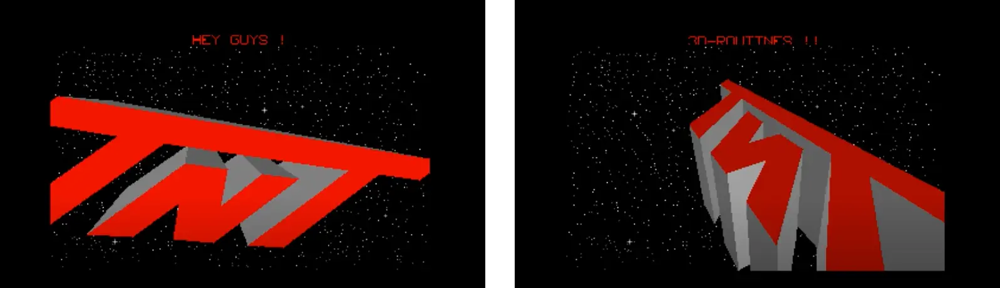
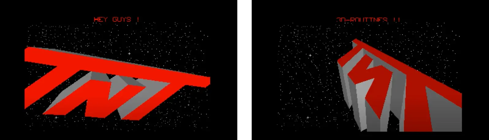

Chapter 5
Demo Coders Unite in 1989
The year 1989 was the culmination of the Atari ST demoscene thus
far. What started out as a single-screen demo with a scrolling
text now evolved into barnstorming displays of animation,
multilayered scrolling, color explosions, and 3D graphics.
No single demo-maker or team could deliver this breadth of
effects, graphics, and music. It was the
Union of multiple demo-groups, like The
CareBears, Deltaforce, the TNT-Crew and, of course, The
Exceptions, that came together to produce two of the best demos
on the Atari ST in the year. The borders broke. The quest for
true overscan was finally successful. The whole monitor area now
became the playground for demos.
Figure 51: The logo of the Union: Creativity, Cracking, Pleasure
(screenshot)
5.1 Union Demo
January 1989 saw the culmination of the Atari ST demo efforts so
far. The multiple demo-groups had joined forces to produce the
Union Demo. The Exceptions teamed up with the TNT Crew, the Care
Bears, Level 16, the Replicants (a French cracker team), and the
Delta Force.
The Union Demo was the first true mega-demo
that deserved its name. In it, all the limits of the Atari ST
were broken. In nearly a megabyte of compressed features, each
demo-group had their own section; users moved a player character
through a scrolling building to select the different screens,
acting as an interactive menu.
Marco Breddin described the Union Demo as:
"Here it is, the computer without custom chips, without sprites,
without scrolling, without a synthesizer that was built using
rather too few quality checks but filled with passion, the charm
and energy of a young computer generation that will give their
all to break the borders and don't care about system
specifications."[60]
Six demo-groups worked on the mega-demo:
The CareBears (TCB), TNT-Crew,
Delta Force, the Replicants,
Level 16, and The Exceptions, with eighteen
contributors to create the thirteen screens of the Union Demo.
The examination of each dazzling screen starts below.
5.1.1 Startup Screen
Figure 52: Startup screen of the Union Demo
(Source:
http://www.pouet.net/prod.php?which=11060
)
The startup screen appears when the demo loads, featuring the
Union logo and sliding distorted text that moves across a
vertically scrolling backdrop. The text layout is distorted
along a wobbly sine curve, with the screen using more than the
ST's standard 16 colors with music playing in the background.
This demo screen was created by The CareBears, Programming by
Niclas Thissel (Nick/Nic) and Jas from The CareBears (TBC), with
graphics by Erik Simon (ES), sound and music conversion by
Jochen Hippel (Mad Max), and music composition by Jeroen
Tel.[61]
5.1.2 Main Screen (Pseudo-Game)
Figure 53: the pseudo-game and interactive main screen of the
Union Demo
(Source:
http://www.pouet.net/prod.php?which=11060
)
This screen serves as the menu for the whole demo. It is a
computer game where users control the character of Charly, an
aardvark figure that moves across a paved surface that scrolls
horizontally. The wall behind it has several doors: a door for
each segment of the demo.
The main area of the screen scrolls smoothly in all directions.
Users move the character to a door, and then they can enter a
different section of the demo. Beneath the interactive menu
area, a smooth horizontal scrolling text moves across the full
width of the screen using the left and right border. So together
with the main area and the scrolling text, there are two
independent scrolling areas. An alien landscape shines through
the text, scrolling at a different speed than the letters. Of
course, the screen features more than the standard 16 colors the
ST can usually display at once.
The screen was programmed by Gunter Bitz (6719) of The
Exceptions, with graphics by Erik Simon (ES). The graphics for
the character of Charly were drawn by Micky. The scrolling text
was programmed and written by The CareBears, the left and right
borders were removed by the TNT-Crew, and Jochen Hippel (Mad
Max) converted the music, which was composed by Jeroen Tel.
5.1.3 TCB 1 - Beat Dis Demo
Figure 54: Beat 'Dis Demo by The CareBears in the Union Demo
(Source:
http://www.pouet.net/prod.php?which=11060
)
This screen features a vertical background scrolling smoothly
with a large horizontal text scrolling across the lower part.
Effectively, this demo screen showed two large scrolling areas.
The scroller at the bottom of the screen features parallax
scrolling, where both the text and the hi-tech background move
across the screen, but at different speeds. The graphic shows a
field of explosions like the pattern of napalm bombing seen from
afar, and the CareBears have placed the painted words: TCB and
"Beat 'dis!" across the pattern of explosions and had it scroll
vertically.
All the while, approximately 450KB of digitized, high-quality
music can be heard. The voice samples "Get down to the funky
beat" are repeated to a techno beat. Users need an Atari ST with
at least one megabyte to hear the music. The demo-makers knew
that in 1989, this was not yet a widespread configuration, so
machines with less RAM would play chip music by Mad Max instead
of the sampled sounds.
This part of the demo was programmed by Niclas Thissel
(Nick/Nic) and Jas with graphics by Erik Simon (ES). The font
was created by Nic using the PC-Font-Maker. The sampled sound
and music were provided by An Cool. Mad Max programmed the sound
chip to play the music composed by Fred Gray.
5.1.4 The Delta Force - Mega Demo (Spherical Demo)
Figure 55: The Spherical Demo by the Delta Force in the Union
Demo
(Source:
http://www.pouet.net/prod.php?which=11060
)
The spherical demo screen by Delta Force is split up into three
main sections. The top segment shows the logo of Delta Force,
which rhythmically flips to change to the logo of the Union and
back again.
The section in the center shows a three-dimensional textured
plane with three bubbles floating above it that pulsate to the
music corresponding to the Atari ST's three sound channels. The
bubbles cast shadows on the plane.
The bottom part of the screen shows another scrolling text. This
time, it is distorted along a sine curve as it horizontally
flows across the screen, and each character's colors fluctuate
in wave patterns. The text moves back and forth and occasionally
flips vertically. It was clearly not only created to be read by
the audience, but also to impress with its transformations. The
background music was converted from the Commodore 64 game,
Mega Apocalypse.
This screen was programmed by New Mode. The graphics were
provided by Slime and Questlord from Delta Force. The graphics
for the purple bubbles were created by Erik Simon (ES). The
music was composed by Rob Hubbard and converted to be playable
by the ST by Jochen Hippel (Mad Max).
5.1.5 TNT Crew 1 - Vector Screen

Figure 56: Vector Screen by the TNT Crew in the Union Demo
(screenshots)
This screen has some of the first 3D graphics in a demo. In
front of a starfield in space, fast and solid models are
spinning across the screen. First, the logo of the TNT-Crew,
that created this section of the demo, then a simplified version
of the Union logo. The TNT-Crew had a 3D version of the famous
Amiga ball, but their version had its center carved out. The
final two models were a spaceship ripped from the game
Starglider II and a carrier from
Carrier Command. The presentation was accompanied by
chip music, and users could switch between models by pressing
the key 0 to 5.
This screen was programmed by Hexadez and Jojo from the
TNT-Crew, with sound and music by Jochen Hippel (Mad Max) from
The Exceptions (TEX). Later, the developers from the TNT-Crew
moved into game development.
Figure 57: The Union Demo featured an adapted Amiga ball in 3D
by the TNT Crew (screenshots)
5.1.6 TNT-Crew 2 - Superscroller
Figure 58: The Wow! Scroller by the TNT-Crew in the Union
Demo
(Source:
http://www.pouet.net/prod.php?which=11060
)
The Atari ST had no hardware to support smooth scrolling, but
the TNT-Crew wanted to prove that it was possible to program a
smooth horizontal scroller (that had been done before) in
addition to programming four layers scrolling horizontally at
independent speeds, simply to outdo their peers.
This screen features a slowly moving bubble pattern in the
background. On top of that, a techno-organic layer scrolls
across the screen. A green layer in unapologetically shrill
colors speeds over the two background layers. To top it off, the
scrolling text dashes over multiple planes. The four-layer
scrolling is smooth at 50 frames per second. To add a final
touch, the screen features more than 100 colors and is
accompanied by digitized music.
When a user presses the arrow keys, the scrolling direction of
the bubbly background layer changes. The smoothness and fluidity
of the scrolling make this one of the more impressive screens of
the whole demo.
This screen was programmed by Michael Bittner (Hexogen) from the
TNT-Crew with graphics by Erik Simon (ES). Mad Max converted the
music that was composed by Jeroen Tel.
5.1.7 TNT Crew 2 - Starballs
Figure 59: The Starballs screen by the TNT-Crew in the Union
Demo
(Source:
http://www.pouet.net/prod.php?which=11060
)
Starballs is probably the least impressive screen in the Union
Demo. It shows a blue space with bubbles shooting towards the
audience that scale fluently for a fake perspective effect. The
Union logo hovers transparently on top of the screen while a
relatively small scrolling text moves across the bottom of the
screen. Unfortunately, the Starballs screen does not break any
new ground. The background music was inspired by David Lynch's
movie, Dune.
The screen was programmed by Michael Bittner (Hexogen) from the
TNT-Crew with graphics by Erik Simon (ES), and Jochen Hippel
(Mad Max) converted the music composition by Rob Hubbard.
Figure 60: The bubbles in the Starballs screen in the Union Demo
travel towards the audience
5.1.8 The Replicants - Wobbly Sprites
Figure 61: The Wobbly Sprites Screen by the Replicants in the
Union Demo
(Source:
http://www.pouet.net/prod.php?which=11060
)
The Wobbly Sprites screen created by the demo-group the
Replicants shows two scrollers with an alpha effect. In the
layer under the words "The Union" at the top and the bottom of
the screen, just peeking in between the contours, two scrolling
texts rush by that can only be read if you really focus on them.
Thirteen sprites forming the name of the demo-group dance along
sine waves and wobble across the screen. Six raster color bars
move up and down at different speeds.
This screen was programmed by Excalibur with graphics by Rank
Xerox, both part of the Replicants. The music was converted by
Jochen Hippel (Mad Max) from an original game music composition
by Jeroen Tel.
5.1.9 TCB 3 - Wow! Superscroller
Figure 62: Wow! Scroller by The CareBears in the Union Demo
(Source:
http://www.pouet.net/prod.php?which=11060
)
The screen shows a multicolored scrolling text that occupies
most of the screen. Meanwhile, the Union logo and The CareBears'
brag wiggles up and down to the digitized industrial music
featuring a sample of a lady moaning. The red background looks
like cosmic worms or brain matter and scrolls vertically to
complete the scrolling extravaganza.
This screen was programmed by Niclas Thissel (Nick/Nic) and Jas,
graphics by ES, and sampled sound by An Cool.
Figure 63: The massive side of the letters in the scrolling text
in this section of the Union Demo
5.1.10 Level 16 - Full Screen Demo

Figure 64: Level 16's Full Screen Demo in the Union Demo
(Source:
http://www.pouet.net/prod.php?which=11060
)
This was the very first time that the Atari ST could be coerced
into using the full display and remain stable while doing so.
The demo-makers group Level 16 perfected programming the
electron beam to achieve this; the Atari ST's whole screen was
now a stage for demos.[62]
The top of the screen shows an abstract landscape framed by what
looks like brains. In the center, the sun is setting to a raster
horizon with dozens of colors. The handles of the demo-makers
are scattered across the golden plane.
The centerpiece is the Level 16 logo. A pipe runs through it
from the right side of the screen, where the ST usually shows a
border, across and behind the logo to the left side. In an
allusion to a simple Rube Goldberg machine, the pipe spews blue
liquid into a funnel, exactly where the left border should be
visible. The base of the logo sports a simplified cityscape with
letters spelling out "Worldwide" beneath it.
A pool of blue liquid with two splashes and the ever-present
bubbles occupies the lower part of the screen. The whole screen
is constantly traversed by a sprite in the shape of the Union's
letter "U," moving into and out of areas that were previously
reserved for the ST's screen borders, proving that this limit
had now been broken.
How did the demo-makers conquer the whole screen? The screen
height is about 412 lines, and the Atari's hardware counts each
scanline so that it knows which line the monitor's beam is
drawing at each moment. When the line has drawn the left border,
the Atari ST starts to top draw the actual graphics; it stops
drawing graphics at the right border. When the beam reaches
bottom line of the screen, the ST stops drawing graphics.
The Atari ST could work using the North American NTSC standard
and the European PAL standard. On a US monitor, the ST would
switch its display to 60 Hz to display 60 pictures per second
with a slightly smaller main area; on a European monitor, the ST
would display 50 pictures per second with a larger main area.
The demo-makers at Level 16 realized that if they switched the
computer from the European display frequency to the North
American display frequency at just the right point, they could
fool the hardware into continuing to draw into the border. This
required very precise coordination of each instruction and
knowing the exact position of the monitor's beam at any time so
that the demo could switch frequency at the right point. To use
the left border, the ST was forced to switch to the 71Hz
frequency of the monochrome resolution for a split second to
confuse the display hardware. This pulsating distortion of the
machine's synapses allowed the ST to use the full screen. It
became a carefully coordinated clockwork of colors and
coordinates.
The Atari ST was complex enough to be powerful, but still simple
enough that a person could understand every aspect of its
hardware to hack it. And Level 16 hacked it to do exactly what
they wanted.
The screen was programmed by Ilja from Level 16 with graphics by
Don from Level 16 and Erik Simon (ES) from The Exceptions. The
music featured on this screen is an original composition by Mad
Max.
5.1.11 TCB 3 -
Super-Multi-Plane-3D-Sine-Distorted-and-Whole-Lotta-Things-More-Scroller
Figure 65: The third TCB scroller in the Union Demo
(Source:
http://www.pouet.net/prod.php?which=11060
)
While Level 16's fullscreen part of the Union Demo may
technically be the most impressive section, the third scroller
by The CareBears is not only technically impressive, but also
aesthetically spectacular.
The CareBears created a multilayered scrolling screen. The top
and bottom parts of the screen have about a dozen layers
smoothly scrolling by at different speeds to create a parallax
effect and a feeling of perspective depth. Like the warming
inevitability of a summer's breeze, the multiple planes speed
across the screen as smoothly and as fluently as a lover's
pounding heart.
Figure 66: The different areas of the technically impressive
multi-planar scroller by The CareBears
In the center of the screen, The CareBears logo becomes
algorithmically distorted and mathematically flipped while
pounding digi-techno plays. The fonts are metallic and inspired
by the "heavy metal" aesthetic. They were, at the same time,
cheap and glossy, inspired by computer games.
Over and across the whole screen, a sine wave of text whips
across, moving in and out of the top and bottom sections. And
all of this with hundreds of colors on the screen at the same
time (see figure 66).
This screen was programmed by Niclas Thissel (Nick/Nic), who
also created the graphics. Like in all the other sections,
Jochen Hippel (Mad Max) converted the music—this time composed
by Rob Hubbard.
5.1.12 TEX - Copier
Figure 67: The disk copier by TEX in the Union Demo
(Source:
http://www.pouet.net/prod.php?which=11060
)
The total size of all the data of all the screens of the Union
Demo was 1400KB, and the Exceptions helped find a way to
compress all of this to 900KB. Udo Fischer (-ME-) programmed
compression routines that unpacked the required parts of the
demo when a user accessed one of the screens. The Union Demo
came on a double-sided, 3.5" floppy disk that only fit 720KB.
But The Exceptions came up with an extended disk format to fit
the full 900KB of crunched code, graphics, and music (for more
details on disk formats and how to archive them, please see
Appendix I).
Unfortunately, this meant that the disk could not be copied the
regular way using the Atari ST's operating system. Therefore,
The Exceptions devised a copying program as part of the demo
itself, which enabled users to make as many copies of the Union
Demo as they liked. It formatted the target disk to take
advantage of the extended disk format. Naturally, The Exceptions
added their own color effects to this screen while the copying
process was running.
The copier was programmed by Gunter Bitz (6719) and Jochen
Hippel (Mad Max) of The Exceptions, with graphics by Erik Simon
(ES), music composed by Jeroen Tel, and sound adaptation by Mad
Max.
5.1.13 The Hidden Soundtracker Screen
Figure 68: The Hidden Screen in the Union Demo
(Source:
http://www.pouet.net/prod.php?which=11060
)
The Union Demo has a hidden screen that can be accessed by
moving the Charly character on the menu screen to one of the
plants. Users are presented with the ST Soundtracker Sample-Mon,
a music player that can reproduce the high-quality four-voice
music from the Amiga on the ST's three-voice sound chip. When
moving the mouse, the mouse pointer is replaced by computer
game-like sprites.
The Soundtracker was programmed by Gunther Bitz (6719). With
graphics by Hexagon and mouse sprite graphics by Erik Simon
(ES), it features an original composition by Mad Max.
5.2 Breaking the Atari ST's Limitations
The Atari ST started out as the underdog of the 16-bit computer
generation. It was affordable, but the hardware was rushed to
market. The rushed hardware led to limitations on the number of
colors on screen, big screen borders, no dedicated graphics
chips for scrolling, no hardware support for sprites, and a
sound chip that was used in 8-bit computers.
The Union Demo broke all these limitations. All the demo screens
showcased dozens of colors that far surpassed the ST's standard
16 color limitation. The fullscreen section by Level 16 removed
all the borders and used them to display graphics. The CareBears
(TCB) and the TNT-Crew created super-smooth multidirectional
scrollers, and in some cases, multiple scrollers on the same
screen moving horizontally and vertically. The Replicants had
more than a dozen sprites whizzing around fluidly. And the
limitations of the ST's AY/YM sound chip was blown away by Mad
Max, who managed to tickle music worthy of a Commodore Amiga out
of the archaic sound hardware.
As The CareBears (TCB) adequately put it in their Wow!
Superscroller: "The Union needs no custom chips." Where the
hardware left them wanting, the demo-makers made up for it in
their ingenuity for programming the software.
Stefan Posthuma, a demo-maker known as Digital Insanity from the
demo-group The Lost Boys, wrote about the Union Demo in his
"History of Demo Programming on the ST" in the diskmag
ST-NEWS:[63]
"This was it. Everybody thought this to be the ultimate demo,
something never to be equalled. Well, in a sense this is true.
'The Union Demo' is a true classic, making a heavy impact on the
demo world. 'The Union Demo' contained a few screens by The
CareBears, including the 3D-sinus-and-a-whollottamore-stuff (or
something) scroller which is considered by most people to be the
best demo screen ever written. With their screens The CareBears
established themselves once and forever and their coder Nic
(Niclas Thissel) was to become a living legend afterwards."
The Exceptions might have pioneered the Atari ST demoscene, but
to create the Union Demo, six disparate groups from all over
Europe came together to create thirteen demo screens: Niclas
Thissel (Nic), Jas, Micky, and An Cool from The CareBears (TCB),
New Mode, Slime and Questlord from Delta Force, Hexadez, Jojo,
and Hexogen (Michael Bittner) from the TNT-Crew, Excalibur and
Rank Xerox from The Replicants, Ilja and Don from Level 16, Erik
Simon (ES), Jochen Hippel (Mad Max), Gunter Bitz (6719), and Udo
Fischer (-ME-) from The Exceptions (TEX).
The knowledge, abilities, and powers of these eighteen
individuals contributed to the technical masterpiece that
surpassed all restrictions of the ST; now, the Atari's demoscene
was alight with ideas and innovation.
5.3 Inspiring Collective Creativity
The Union Demo was not only the swan song of The Exceptions as
demo-makers; 1989 was the last year that The Exceptions spent
any substantial amount of time on creating demo art. They moved
on to game development and founded Thalion, together with other
key players in the ST demo scene, including members of the
TNT-Crew, The CareBears (TCB), and DeltaForce. They would spend
the rest of 1989 working on their game releases. Meanwhile,
other demo-groups from all over Europe saw what could be done
with the Atari ST. The game was on.
Figure 69: Swedish New Year Demo 1 (screenshot).
In 1989, The CareBears from Sweden released their impressive
Swedish New Year Demo, and not to be outdone by their
competition in the scene, they followed that with the Cuddly
Demo and the Whattaheck Demo in the same year.
Figure 70: The Cuddly Demos (screenshot)
The CareBears proved that they were the new kings in the ST
demoscene. Both on a technical and artistic level, they
surpassed The Exceptions and, in turn, started to inspire other
demo-makers to produce new material.

Figure 71: Whattaheck Demo (screenshot)
Phalanx released their Overdrive Demo in 1989 with music that
came close to surpassing the efforts of Mad Max.
Figure 72: The Overdrive Demo (screenshot)
Thalion Software, the new home of The Exceptions in Gütersloh,
Northrhine-Westphalia in West Germany, started to release games
for the Atari ST and the Commodore Amiga. Among their first
releases included the beat-em'-up game
Chambers of Shaolin, the space shooter
Warp, the jump-and-run
Seven Gates of Jamabala, the shoot-'em-up
Leavin' Teramis, and the puzzle game
Atomix. They were technically sophisticated games with
intricate graphics, smooth scrolling, and superior sound and
music. Most were met with rave reviews and sold well in the
market.
Figure 73: Title Screen of The Exceptions' first game:
Dragonflight
(Source:
http://thalion.exotica.org.uk/games/dragonflight/df.html
)
The crowning achievement of Thalion was the game that The
Exceptions had started working on right after the B.I.G. Demo, a
fantasy role-playing game called Dragonflight. They
worked on the game until they achieved the level of perfection
they wanted, and it was released in 1990.
Dragonflight was based on an original story by Erik
Simon, who also produced the graphics, while Udo Fischer
programmed the game, and Jochen Hippel composed the music. The
ST-NEWS veteran Richard Karsmakers wrote the novella
that came as part of the package. The game was well-received and
spawned two sequels.
Figure 74: In-game credits of Dragonflight
(Source:
http://thalion.exotica.org.uk/games/dragonflight/df.html
)
After Dragonflight, The Exceptions released their most
technically impressive game: Wings of Death, a vertical
scrolling shoot-'em-up game. In both Wings of Death and
in Dragonflight, there is a red dragon like the one we
saw in the README.PRG demo back in 1987.
Figure 75: Title screens of Wings of Death
(Source:
http://thalion.exotica.org.uk/games/wod/wod.html
)
Wings of Death employed every trick of the trade to
create a "bullet-hell" vertical scroller with fluid backgrounds,
dozens of on-screen sprites and, of course, many more colors
than the ST should have been able to display, accompanied by a
pounding synth soundtrack.
Figure 76: In-game graphics of Wings of Death
(Source:
http://thalion.exotica.org.uk/games/wod/wod2.html
)
The Exceptions had made it. Their dreams had come true; they
evolved from basement-coders who created colorful demos into
inspirational figures in demo art. They united the demoscene to
make something spectacular and went on to become hard-working
professionals in the bludgeoning games industry of the 1990s.
5.4 Conclusion: Limitations Fueling Creation
The Exceptions were not the best overall on the Atari ST, but
they were the first, and therefore laid the groundwork for the
best to come. Together with their fellow demo-makers, they
learned their trade on a marginal computer with limited
hardware. With their inquisitiveness and ingenuity, they managed
to expose the last bits of performance out of the Atari ST and
create demos that broke the last technical limits. While doing
so, they created demo art and contributed to spawning a thriving
scene on that system.
By leading the way, provoking their competitors, and showing
what can be done, The Exceptions united groups from all over the
world to produce collaborative demo art projects in a pre-web
age. Then, they used their skills, discipline, and dedication to
become game developers. The Exceptions changed the demoscene
taking it from a basement hobby to a much larger phenomenon and
lived to pursue their aspirations in the process.
5.5 Computing Since the Days of The Exceptions
What has happened in computing since The Exceptions? In short,
essentially everything we know today. Since 1989, there has been
the success of Microsoft Windows, the unstoppable expansion of
the world wide web, mobile computing and smartphones, machine
learning and artificial intelligence, blockchain and
crypto-currencies, and a games industry with a larger total
revenue than the movie business.[64]
Software development has changed too. The Exceptions, other
demo-makers, and game creators used to write software for
specific machines in assembly language. Most software today is
written for platforms, such as the web, specific desktop
operating systems like Windows or MacOS, smartphone platforms
like Android or iOS, or gaming consoles like the Nintendo
Switch, the Microsoft Xbox, or the Sony PlayStation. To
summarize it all in a few paragraphs would be an exercise in
futility; yet there are some key developments that need to be
pointed out.
Some platforms transcend the hardware and can run on any
sufficiently powerful system. The first of these is the web
itself. Web browsers have turned into their own computing
platform that opens a pressure valve into the information super
stream and allows copious amounts of data to flow into it. The
operating system of a device provides multiple layers, such as
low-level functions and drivers, application programming
interfaces and libraries, and finally, the user interface.
Additionally, third party software run their frameworks and
engines, i.e., large collections of proven tools that enable
more and more complex software projects and take away the need
to develop common features every time from scratch. These
include web frameworks, but also gaming engines like Unity and
the Unreal Engine. Game engines are whole systems for creating
everything a game needs, such as the game logic and the rules,
the 3D worlds and the characters, the animation, and all the
interactions.
Over the past thirty years, game development has moved from 2D
to 3D, and at the same time, has become less dependent on the
actual hardware and more dependent on the frameworks and
engines. Games developers very rarely go right "to the metal";
they do not program at the very basic hardware level, but
instead use frameworks or ideally a game engine like Unity or
the Unreal Engine that run on the major computing and gaming
platforms and is therefore independent of the actual hardware.
On the other hand, games and 3D creation demand a high computing
performance and are dependent on fast CPUs and powerful graphics
cards, so that they can produce newer, more elaborate, and
flashy games to draw in the gamers.
The wide variety of different home computers in the 1980s has
disappeared today. Personal computers have settled on the
commercial duopoly of the OS Microsoft Windows and the single
manufacturer operating system of Apple's MacOS, with a
consistent market share that hovers at ten percent. A multitude
of Linux distributions compete for the desktops and notebooks of
end users. Even though the global annual adoption of Linux
seldom exceeds single digits percentages, in the background,
most of the internet runs on Linux servers. Most commercial
applications have an open-source equivalent, created, and
maintained by large groups of enthusiasts who pore in their time
and ingenuity. They have found an unlikely alliance with large
corporations and public entities like governments, universities
and municipalities that sponsor and help develop open-source
software for their own benefit, and the benefit of all. For
example, every dollar a large company like Novell spends on
LibreOffice[65]
puts more features into the hands of users free of charge. Every
developer that a large pharmaceutical company like Pfizer puts
on a Drupal project[66]
helps elevate the content management system for all other users.
Every contribution by a large CPU manufacturer like AMD to the
Blender 3D software[67]
puts capable tools into the hands of future 3D graphics artists.
The demoscene thrives to this day as a tiny corner of the
open-source world and a niche of new media art. Members of the
demoscene still create their art and participate in demo-parties
and competitions. The computing performance available to users
today is so vast that the demoscenes implement artificial
limitations. They might be memory limitations, e.g., a full demo
in 64Kbytes, or time limitations, e.g., to develop a demo in a
48-hour hackathon, or use old computing hardware that is far
less capable than the hardware today to prove that in the hands
of the right developers, it is far more capable than anyone
would have thought.
And decades ago, on one of these obsolete computers, the Atari
ST, The Exceptions were "ground zero" for their field of the
demoscene.
Footnotes
[59]
Harris, Duncan. Wall, Darren. 2016.
The Bitmap Brothers: Universe. Read Only Memory
» Back [59]
[60]
Breddin Marco A. (Foreword by Prof. Dr. Gundolf S. Freyermuth).
Breakin' the Borders. A true story of digital liberation and
Power Without the Price.
2017. Hannover. MicroZeit Verlag. Pages 92 - 93.
» Back [59]
[61]
All credits for the individual screens of the described in an
archived article of the disk-mag ST-NEWS at
https://st-news.com/issues/st-news-volume-4-issue-1/fun/union-demo/
(Retrieved on May 25, 2020)
» Back [61]
[62]
The very first demo that proved that the ST could be made to
display the full screen was the aptly named Fullscreen Demo by
the Flying Egg/Omega. Unfortunately, it was unstable and only
worked on certain Ataris.
» Back [62]
[63] Stefan Posthuma (aka Digital Insanity of The
Lost Boys). The History of Demo Programming On The ST.
https://st-news.com/issues/st-news-volume-7-issue-3/reviews/the-st-demo-scene-a-history/
(Retrieved on June 3, 2020)
» Back [63]
[64] Newzoo.com. The World's 2.7 Billion Gamers Will
Spend $159.3 Billion on Games in 2020; The Market Will Surpass
$200 Billion by 2023
https://newzoo.com/insights/articles/newzoo-games-market-numbers-revenues-and-audience-2020-2023/
(Retrieved on September 20, 2020)
» Back [64]
[63] The Linux Journal. Who Contributes the Most to
LibreOffice?
https://www.linuxjournal.com/content/who-contributes-most-libreoffice
(Retrieved on September 25, 2020)
» Back [65]
[66] The site of Dries Buytart, creator of Drupal.
Why large organizations are choosing to contribute to Drupal
https://dri.es/why-large-organizations-are-choosing-to-contribute-to-drupal
(Retrieved on September 25, 2020)
» Back [66]
[67] The largest contributors to the Blender fund.
https://fund.blender.org/
» Back [67]
The year 1989 was the culmination of the Atari ST demoscene thus far. What started out as a single-screen demo with a scrolling text now evolved into barnstorming displays of animation, multilayered scrolling, color explosions, and 3D graphics.
No single demo-maker or team could deliver this breadth of effects, graphics, and music. It was the Union of multiple demo-groups, like The CareBears, Deltaforce, the TNT-Crew and, of course, The Exceptions, that came together to produce two of the best demos on the Atari ST in the year. The borders broke. The quest for true overscan was finally successful. The whole monitor area now became the playground for demos.
Figure 51: The logo of the Union: Creativity, Cracking, Pleasure (screenshot)
5.1 Union Demo
January 1989 saw the culmination of the Atari ST demo efforts so far. The multiple demo-groups had joined forces to produce the Union Demo. The Exceptions teamed up with the TNT Crew, the Care Bears, Level 16, the Replicants (a French cracker team), and the Delta Force.
The Union Demo was the first true mega-demo that deserved its name. In it, all the limits of the Atari ST were broken. In nearly a megabyte of compressed features, each demo-group had their own section; users moved a player character through a scrolling building to select the different screens, acting as an interactive menu.
Marco Breddin described the Union Demo as:
"Here it is, the computer without custom chips, without sprites, without scrolling, without a synthesizer that was built using rather too few quality checks but filled with passion, the charm and energy of a young computer generation that will give their all to break the borders and don't care about system specifications."[60]
Six demo-groups worked on the mega-demo: The CareBears (TCB), TNT-Crew, Delta Force, the Replicants, Level 16, and The Exceptions, with eighteen contributors to create the thirteen screens of the Union Demo. The examination of each dazzling screen starts below.
5.1.1 Startup Screen
Figure 52: Startup screen of the Union Demo
(Source:
http://www.pouet.net/prod.php?which=11060
)
The startup screen appears when the demo loads, featuring the Union logo and sliding distorted text that moves across a vertically scrolling backdrop. The text layout is distorted along a wobbly sine curve, with the screen using more than the ST's standard 16 colors with music playing in the background.
This demo screen was created by The CareBears, Programming by Niclas Thissel (Nick/Nic) and Jas from The CareBears (TBC), with graphics by Erik Simon (ES), sound and music conversion by Jochen Hippel (Mad Max), and music composition by Jeroen Tel.[61]
5.1.2 Main Screen (Pseudo-Game)
Figure 53: the pseudo-game and interactive main screen of the
Union Demo
(Source:
http://www.pouet.net/prod.php?which=11060
)
This screen serves as the menu for the whole demo. It is a computer game where users control the character of Charly, an aardvark figure that moves across a paved surface that scrolls horizontally. The wall behind it has several doors: a door for each segment of the demo.
The main area of the screen scrolls smoothly in all directions. Users move the character to a door, and then they can enter a different section of the demo. Beneath the interactive menu area, a smooth horizontal scrolling text moves across the full width of the screen using the left and right border. So together with the main area and the scrolling text, there are two independent scrolling areas. An alien landscape shines through the text, scrolling at a different speed than the letters. Of course, the screen features more than the standard 16 colors the ST can usually display at once.
The screen was programmed by Gunter Bitz (6719) of The Exceptions, with graphics by Erik Simon (ES). The graphics for the character of Charly were drawn by Micky. The scrolling text was programmed and written by The CareBears, the left and right borders were removed by the TNT-Crew, and Jochen Hippel (Mad Max) converted the music, which was composed by Jeroen Tel.
5.1.3 TCB 1 - Beat Dis Demo
Figure 54: Beat 'Dis Demo by The CareBears in the Union Demo
(Source:
http://www.pouet.net/prod.php?which=11060
)
This screen features a vertical background scrolling smoothly with a large horizontal text scrolling across the lower part. Effectively, this demo screen showed two large scrolling areas.
The scroller at the bottom of the screen features parallax scrolling, where both the text and the hi-tech background move across the screen, but at different speeds. The graphic shows a field of explosions like the pattern of napalm bombing seen from afar, and the CareBears have placed the painted words: TCB and "Beat 'dis!" across the pattern of explosions and had it scroll vertically.
All the while, approximately 450KB of digitized, high-quality music can be heard. The voice samples "Get down to the funky beat" are repeated to a techno beat. Users need an Atari ST with at least one megabyte to hear the music. The demo-makers knew that in 1989, this was not yet a widespread configuration, so machines with less RAM would play chip music by Mad Max instead of the sampled sounds.
This part of the demo was programmed by Niclas Thissel (Nick/Nic) and Jas with graphics by Erik Simon (ES). The font was created by Nic using the PC-Font-Maker. The sampled sound and music were provided by An Cool. Mad Max programmed the sound chip to play the music composed by Fred Gray.
5.1.4 The Delta Force - Mega Demo (Spherical Demo)
Figure 55: The Spherical Demo by the Delta Force in the Union
Demo
(Source:
http://www.pouet.net/prod.php?which=11060
)
The spherical demo screen by Delta Force is split up into three main sections. The top segment shows the logo of Delta Force, which rhythmically flips to change to the logo of the Union and back again.
The section in the center shows a three-dimensional textured plane with three bubbles floating above it that pulsate to the music corresponding to the Atari ST's three sound channels. The bubbles cast shadows on the plane.
The bottom part of the screen shows another scrolling text. This time, it is distorted along a sine curve as it horizontally flows across the screen, and each character's colors fluctuate in wave patterns. The text moves back and forth and occasionally flips vertically. It was clearly not only created to be read by the audience, but also to impress with its transformations. The background music was converted from the Commodore 64 game, Mega Apocalypse.
This screen was programmed by New Mode. The graphics were provided by Slime and Questlord from Delta Force. The graphics for the purple bubbles were created by Erik Simon (ES). The music was composed by Rob Hubbard and converted to be playable by the ST by Jochen Hippel (Mad Max).
5.1.5 TNT Crew 1 - Vector Screen

Figure 56: Vector Screen by the TNT Crew in the Union Demo (screenshots)
This screen has some of the first 3D graphics in a demo. In front of a starfield in space, fast and solid models are spinning across the screen. First, the logo of the TNT-Crew, that created this section of the demo, then a simplified version of the Union logo. The TNT-Crew had a 3D version of the famous Amiga ball, but their version had its center carved out. The final two models were a spaceship ripped from the game Starglider II and a carrier from Carrier Command. The presentation was accompanied by chip music, and users could switch between models by pressing the key 0 to 5.
This screen was programmed by Hexadez and Jojo from the TNT-Crew, with sound and music by Jochen Hippel (Mad Max) from The Exceptions (TEX). Later, the developers from the TNT-Crew moved into game development.
Figure 57: The Union Demo featured an adapted Amiga ball in 3D by the TNT Crew (screenshots)
5.1.6 TNT-Crew 2 - Superscroller
Figure 58: The Wow! Scroller by the TNT-Crew in the Union
Demo
(Source:
http://www.pouet.net/prod.php?which=11060
)
The Atari ST had no hardware to support smooth scrolling, but the TNT-Crew wanted to prove that it was possible to program a smooth horizontal scroller (that had been done before) in addition to programming four layers scrolling horizontally at independent speeds, simply to outdo their peers.
This screen features a slowly moving bubble pattern in the background. On top of that, a techno-organic layer scrolls across the screen. A green layer in unapologetically shrill colors speeds over the two background layers. To top it off, the scrolling text dashes over multiple planes. The four-layer scrolling is smooth at 50 frames per second. To add a final touch, the screen features more than 100 colors and is accompanied by digitized music.
When a user presses the arrow keys, the scrolling direction of the bubbly background layer changes. The smoothness and fluidity of the scrolling make this one of the more impressive screens of the whole demo.
This screen was programmed by Michael Bittner (Hexogen) from the TNT-Crew with graphics by Erik Simon (ES). Mad Max converted the music that was composed by Jeroen Tel.
5.1.7 TNT Crew 2 - Starballs
Figure 59: The Starballs screen by the TNT-Crew in the Union
Demo
(Source:
http://www.pouet.net/prod.php?which=11060
)
Starballs is probably the least impressive screen in the Union Demo. It shows a blue space with bubbles shooting towards the audience that scale fluently for a fake perspective effect. The Union logo hovers transparently on top of the screen while a relatively small scrolling text moves across the bottom of the screen. Unfortunately, the Starballs screen does not break any new ground. The background music was inspired by David Lynch's movie, Dune.
The screen was programmed by Michael Bittner (Hexogen) from the TNT-Crew with graphics by Erik Simon (ES), and Jochen Hippel (Mad Max) converted the music composition by Rob Hubbard.
Figure 60: The bubbles in the Starballs screen in the Union Demo travel towards the audience
5.1.8 The Replicants - Wobbly Sprites
Figure 61: The Wobbly Sprites Screen by the Replicants in the
Union Demo
(Source:
http://www.pouet.net/prod.php?which=11060
)
The Wobbly Sprites screen created by the demo-group the Replicants shows two scrollers with an alpha effect. In the layer under the words "The Union" at the top and the bottom of the screen, just peeking in between the contours, two scrolling texts rush by that can only be read if you really focus on them. Thirteen sprites forming the name of the demo-group dance along sine waves and wobble across the screen. Six raster color bars move up and down at different speeds.
This screen was programmed by Excalibur with graphics by Rank Xerox, both part of the Replicants. The music was converted by Jochen Hippel (Mad Max) from an original game music composition by Jeroen Tel.
5.1.9 TCB 3 - Wow! Superscroller
Figure 62: Wow! Scroller by The CareBears in the Union Demo
(Source:
http://www.pouet.net/prod.php?which=11060
)
The screen shows a multicolored scrolling text that occupies most of the screen. Meanwhile, the Union logo and The CareBears' brag wiggles up and down to the digitized industrial music featuring a sample of a lady moaning. The red background looks like cosmic worms or brain matter and scrolls vertically to complete the scrolling extravaganza.
This screen was programmed by Niclas Thissel (Nick/Nic) and Jas, graphics by ES, and sampled sound by An Cool.
Figure 63: The massive side of the letters in the scrolling text in this section of the Union Demo
5.1.10 Level 16 - Full Screen Demo
Figure 64: Level 16's Full Screen Demo in the Union Demo
(Source:
http://www.pouet.net/prod.php?which=11060
)
This was the very first time that the Atari ST could be coerced into using the full display and remain stable while doing so. The demo-makers group Level 16 perfected programming the electron beam to achieve this; the Atari ST's whole screen was now a stage for demos.[62]
The top of the screen shows an abstract landscape framed by what looks like brains. In the center, the sun is setting to a raster horizon with dozens of colors. The handles of the demo-makers are scattered across the golden plane.
The centerpiece is the Level 16 logo. A pipe runs through it from the right side of the screen, where the ST usually shows a border, across and behind the logo to the left side. In an allusion to a simple Rube Goldberg machine, the pipe spews blue liquid into a funnel, exactly where the left border should be visible. The base of the logo sports a simplified cityscape with letters spelling out "Worldwide" beneath it.
A pool of blue liquid with two splashes and the ever-present bubbles occupies the lower part of the screen. The whole screen is constantly traversed by a sprite in the shape of the Union's letter "U," moving into and out of areas that were previously reserved for the ST's screen borders, proving that this limit had now been broken.
How did the demo-makers conquer the whole screen? The screen height is about 412 lines, and the Atari's hardware counts each scanline so that it knows which line the monitor's beam is drawing at each moment. When the line has drawn the left border, the Atari ST starts to top draw the actual graphics; it stops drawing graphics at the right border. When the beam reaches bottom line of the screen, the ST stops drawing graphics.
The Atari ST could work using the North American NTSC standard and the European PAL standard. On a US monitor, the ST would switch its display to 60 Hz to display 60 pictures per second with a slightly smaller main area; on a European monitor, the ST would display 50 pictures per second with a larger main area.
The demo-makers at Level 16 realized that if they switched the computer from the European display frequency to the North American display frequency at just the right point, they could fool the hardware into continuing to draw into the border. This required very precise coordination of each instruction and knowing the exact position of the monitor's beam at any time so that the demo could switch frequency at the right point. To use the left border, the ST was forced to switch to the 71Hz frequency of the monochrome resolution for a split second to confuse the display hardware. This pulsating distortion of the machine's synapses allowed the ST to use the full screen. It became a carefully coordinated clockwork of colors and coordinates.
The Atari ST was complex enough to be powerful, but still simple enough that a person could understand every aspect of its hardware to hack it. And Level 16 hacked it to do exactly what they wanted.
The screen was programmed by Ilja from Level 16 with graphics by Don from Level 16 and Erik Simon (ES) from The Exceptions. The music featured on this screen is an original composition by Mad Max.
5.1.11 TCB 3 - Super-Multi-Plane-3D-Sine-Distorted-and-Whole-Lotta-Things-More-Scroller
Figure 65: The third TCB scroller in the Union Demo
(Source:
http://www.pouet.net/prod.php?which=11060
)
While Level 16's fullscreen part of the Union Demo may technically be the most impressive section, the third scroller by The CareBears is not only technically impressive, but also aesthetically spectacular.
The CareBears created a multilayered scrolling screen. The top and bottom parts of the screen have about a dozen layers smoothly scrolling by at different speeds to create a parallax effect and a feeling of perspective depth. Like the warming inevitability of a summer's breeze, the multiple planes speed across the screen as smoothly and as fluently as a lover's pounding heart.
Figure 66: The different areas of the technically impressive multi-planar scroller by The CareBears
In the center of the screen, The CareBears logo becomes algorithmically distorted and mathematically flipped while pounding digi-techno plays. The fonts are metallic and inspired by the "heavy metal" aesthetic. They were, at the same time, cheap and glossy, inspired by computer games.
Over and across the whole screen, a sine wave of text whips across, moving in and out of the top and bottom sections. And all of this with hundreds of colors on the screen at the same time (see figure 66).
This screen was programmed by Niclas Thissel (Nick/Nic), who also created the graphics. Like in all the other sections, Jochen Hippel (Mad Max) converted the music—this time composed by Rob Hubbard.
5.1.12 TEX - Copier
Figure 67: The disk copier by TEX in the Union Demo
(Source:
http://www.pouet.net/prod.php?which=11060
)
The total size of all the data of all the screens of the Union Demo was 1400KB, and the Exceptions helped find a way to compress all of this to 900KB. Udo Fischer (-ME-) programmed compression routines that unpacked the required parts of the demo when a user accessed one of the screens. The Union Demo came on a double-sided, 3.5" floppy disk that only fit 720KB. But The Exceptions came up with an extended disk format to fit the full 900KB of crunched code, graphics, and music (for more details on disk formats and how to archive them, please see Appendix I).
Unfortunately, this meant that the disk could not be copied the regular way using the Atari ST's operating system. Therefore, The Exceptions devised a copying program as part of the demo itself, which enabled users to make as many copies of the Union Demo as they liked. It formatted the target disk to take advantage of the extended disk format. Naturally, The Exceptions added their own color effects to this screen while the copying process was running.
The copier was programmed by Gunter Bitz (6719) and Jochen Hippel (Mad Max) of The Exceptions, with graphics by Erik Simon (ES), music composed by Jeroen Tel, and sound adaptation by Mad Max.
5.1.13 The Hidden Soundtracker Screen
Figure 68: The Hidden Screen in the Union Demo
(Source:
http://www.pouet.net/prod.php?which=11060
)
The Union Demo has a hidden screen that can be accessed by moving the Charly character on the menu screen to one of the plants. Users are presented with the ST Soundtracker Sample-Mon, a music player that can reproduce the high-quality four-voice music from the Amiga on the ST's three-voice sound chip. When moving the mouse, the mouse pointer is replaced by computer game-like sprites.
The Soundtracker was programmed by Gunther Bitz (6719). With graphics by Hexagon and mouse sprite graphics by Erik Simon (ES), it features an original composition by Mad Max.
5.2 Breaking the Atari ST's Limitations
The Atari ST started out as the underdog of the 16-bit computer generation. It was affordable, but the hardware was rushed to market. The rushed hardware led to limitations on the number of colors on screen, big screen borders, no dedicated graphics chips for scrolling, no hardware support for sprites, and a sound chip that was used in 8-bit computers.
The Union Demo broke all these limitations. All the demo screens showcased dozens of colors that far surpassed the ST's standard 16 color limitation. The fullscreen section by Level 16 removed all the borders and used them to display graphics. The CareBears (TCB) and the TNT-Crew created super-smooth multidirectional scrollers, and in some cases, multiple scrollers on the same screen moving horizontally and vertically. The Replicants had more than a dozen sprites whizzing around fluidly. And the limitations of the ST's AY/YM sound chip was blown away by Mad Max, who managed to tickle music worthy of a Commodore Amiga out of the archaic sound hardware.
As The CareBears (TCB) adequately put it in their Wow! Superscroller: "The Union needs no custom chips." Where the hardware left them wanting, the demo-makers made up for it in their ingenuity for programming the software.
Stefan Posthuma, a demo-maker known as Digital Insanity from the demo-group The Lost Boys, wrote about the Union Demo in his "History of Demo Programming on the ST" in the diskmag ST-NEWS:[63]
"This was it. Everybody thought this to be the ultimate demo, something never to be equalled. Well, in a sense this is true. 'The Union Demo' is a true classic, making a heavy impact on the demo world. 'The Union Demo' contained a few screens by The CareBears, including the 3D-sinus-and-a-whollottamore-stuff (or something) scroller which is considered by most people to be the best demo screen ever written. With their screens The CareBears established themselves once and forever and their coder Nic (Niclas Thissel) was to become a living legend afterwards."
The Exceptions might have pioneered the Atari ST demoscene, but to create the Union Demo, six disparate groups from all over Europe came together to create thirteen demo screens: Niclas Thissel (Nic), Jas, Micky, and An Cool from The CareBears (TCB), New Mode, Slime and Questlord from Delta Force, Hexadez, Jojo, and Hexogen (Michael Bittner) from the TNT-Crew, Excalibur and Rank Xerox from The Replicants, Ilja and Don from Level 16, Erik Simon (ES), Jochen Hippel (Mad Max), Gunter Bitz (6719), and Udo Fischer (-ME-) from The Exceptions (TEX).
The knowledge, abilities, and powers of these eighteen individuals contributed to the technical masterpiece that surpassed all restrictions of the ST; now, the Atari's demoscene was alight with ideas and innovation.
5.3 Inspiring Collective Creativity
The Union Demo was not only the swan song of The Exceptions as demo-makers; 1989 was the last year that The Exceptions spent any substantial amount of time on creating demo art. They moved on to game development and founded Thalion, together with other key players in the ST demo scene, including members of the TNT-Crew, The CareBears (TCB), and DeltaForce. They would spend the rest of 1989 working on their game releases. Meanwhile, other demo-groups from all over Europe saw what could be done with the Atari ST. The game was on.
Figure 69: Swedish New Year Demo 1 (screenshot).
In 1989, The CareBears from Sweden released their impressive Swedish New Year Demo, and not to be outdone by their competition in the scene, they followed that with the Cuddly Demo and the Whattaheck Demo in the same year.
Figure 70: The Cuddly Demos (screenshot)
The CareBears proved that they were the new kings in the ST demoscene. Both on a technical and artistic level, they surpassed The Exceptions and, in turn, started to inspire other demo-makers to produce new material.
Figure 71: Whattaheck Demo (screenshot)
Phalanx released their Overdrive Demo in 1989 with music that came close to surpassing the efforts of Mad Max.
Figure 72: The Overdrive Demo (screenshot)
Thalion Software, the new home of The Exceptions in Gütersloh, Northrhine-Westphalia in West Germany, started to release games for the Atari ST and the Commodore Amiga. Among their first releases included the beat-em'-up game Chambers of Shaolin, the space shooter Warp, the jump-and-run Seven Gates of Jamabala, the shoot-'em-up Leavin' Teramis, and the puzzle game Atomix. They were technically sophisticated games with intricate graphics, smooth scrolling, and superior sound and music. Most were met with rave reviews and sold well in the market.
Figure 73: Title Screen of The Exceptions' first game:
Dragonflight
(Source:
http://thalion.exotica.org.uk/games/dragonflight/df.html
)
The crowning achievement of Thalion was the game that The Exceptions had started working on right after the B.I.G. Demo, a fantasy role-playing game called Dragonflight. They worked on the game until they achieved the level of perfection they wanted, and it was released in 1990. Dragonflight was based on an original story by Erik Simon, who also produced the graphics, while Udo Fischer programmed the game, and Jochen Hippel composed the music. The ST-NEWS veteran Richard Karsmakers wrote the novella that came as part of the package. The game was well-received and spawned two sequels.
Figure 74: In-game credits of Dragonflight
(Source:
http://thalion.exotica.org.uk/games/dragonflight/df.html
)
After Dragonflight, The Exceptions released their most technically impressive game: Wings of Death, a vertical scrolling shoot-'em-up game. In both Wings of Death and in Dragonflight, there is a red dragon like the one we saw in the README.PRG demo back in 1987.
Figure 75: Title screens of Wings of Death
(Source:
http://thalion.exotica.org.uk/games/wod/wod.html
)
Wings of Death employed every trick of the trade to create a "bullet-hell" vertical scroller with fluid backgrounds, dozens of on-screen sprites and, of course, many more colors than the ST should have been able to display, accompanied by a pounding synth soundtrack.
Figure 76: In-game graphics of Wings of Death
(Source:
http://thalion.exotica.org.uk/games/wod/wod2.html
)
The Exceptions had made it. Their dreams had come true; they evolved from basement-coders who created colorful demos into inspirational figures in demo art. They united the demoscene to make something spectacular and went on to become hard-working professionals in the bludgeoning games industry of the 1990s.
5.4 Conclusion: Limitations Fueling Creation
The Exceptions were not the best overall on the Atari ST, but they were the first, and therefore laid the groundwork for the best to come. Together with their fellow demo-makers, they learned their trade on a marginal computer with limited hardware. With their inquisitiveness and ingenuity, they managed to expose the last bits of performance out of the Atari ST and create demos that broke the last technical limits. While doing so, they created demo art and contributed to spawning a thriving scene on that system.
By leading the way, provoking their competitors, and showing what can be done, The Exceptions united groups from all over the world to produce collaborative demo art projects in a pre-web age. Then, they used their skills, discipline, and dedication to become game developers. The Exceptions changed the demoscene taking it from a basement hobby to a much larger phenomenon and lived to pursue their aspirations in the process.
5.5 Computing Since the Days of The Exceptions
What has happened in computing since The Exceptions? In short, essentially everything we know today. Since 1989, there has been the success of Microsoft Windows, the unstoppable expansion of the world wide web, mobile computing and smartphones, machine learning and artificial intelligence, blockchain and crypto-currencies, and a games industry with a larger total revenue than the movie business.[64]
Software development has changed too. The Exceptions, other demo-makers, and game creators used to write software for specific machines in assembly language. Most software today is written for platforms, such as the web, specific desktop operating systems like Windows or MacOS, smartphone platforms like Android or iOS, or gaming consoles like the Nintendo Switch, the Microsoft Xbox, or the Sony PlayStation. To summarize it all in a few paragraphs would be an exercise in futility; yet there are some key developments that need to be pointed out.
Some platforms transcend the hardware and can run on any sufficiently powerful system. The first of these is the web itself. Web browsers have turned into their own computing platform that opens a pressure valve into the information super stream and allows copious amounts of data to flow into it. The operating system of a device provides multiple layers, such as low-level functions and drivers, application programming interfaces and libraries, and finally, the user interface.
Additionally, third party software run their frameworks and engines, i.e., large collections of proven tools that enable more and more complex software projects and take away the need to develop common features every time from scratch. These include web frameworks, but also gaming engines like Unity and the Unreal Engine. Game engines are whole systems for creating everything a game needs, such as the game logic and the rules, the 3D worlds and the characters, the animation, and all the interactions.
Over the past thirty years, game development has moved from 2D to 3D, and at the same time, has become less dependent on the actual hardware and more dependent on the frameworks and engines. Games developers very rarely go right "to the metal"; they do not program at the very basic hardware level, but instead use frameworks or ideally a game engine like Unity or the Unreal Engine that run on the major computing and gaming platforms and is therefore independent of the actual hardware. On the other hand, games and 3D creation demand a high computing performance and are dependent on fast CPUs and powerful graphics cards, so that they can produce newer, more elaborate, and flashy games to draw in the gamers.
The wide variety of different home computers in the 1980s has disappeared today. Personal computers have settled on the commercial duopoly of the OS Microsoft Windows and the single manufacturer operating system of Apple's MacOS, with a consistent market share that hovers at ten percent. A multitude of Linux distributions compete for the desktops and notebooks of end users. Even though the global annual adoption of Linux seldom exceeds single digits percentages, in the background, most of the internet runs on Linux servers. Most commercial applications have an open-source equivalent, created, and maintained by large groups of enthusiasts who pore in their time and ingenuity. They have found an unlikely alliance with large corporations and public entities like governments, universities and municipalities that sponsor and help develop open-source software for their own benefit, and the benefit of all. For example, every dollar a large company like Novell spends on LibreOffice[65] puts more features into the hands of users free of charge. Every developer that a large pharmaceutical company like Pfizer puts on a Drupal project[66] helps elevate the content management system for all other users. Every contribution by a large CPU manufacturer like AMD to the Blender 3D software[67] puts capable tools into the hands of future 3D graphics artists.
The demoscene thrives to this day as a tiny corner of the open-source world and a niche of new media art. Members of the demoscene still create their art and participate in demo-parties and competitions. The computing performance available to users today is so vast that the demoscenes implement artificial limitations. They might be memory limitations, e.g., a full demo in 64Kbytes, or time limitations, e.g., to develop a demo in a 48-hour hackathon, or use old computing hardware that is far less capable than the hardware today to prove that in the hands of the right developers, it is far more capable than anyone would have thought.
And decades ago, on one of these obsolete computers, the Atari ST, The Exceptions were "ground zero" for their field of the demoscene.
Footnotes
[59]
Harris, Duncan. Wall, Darren. 2016.
The Bitmap Brothers: Universe. Read Only Memory
» Back [59]
[60]
Breddin Marco A. (Foreword by Prof. Dr. Gundolf S. Freyermuth).
Breakin' the Borders. A true story of digital liberation and
Power Without the Price.
2017. Hannover. MicroZeit Verlag. Pages 92 - 93.
» Back [59]
[61]
All credits for the individual screens of the described in an
archived article of the disk-mag ST-NEWS at
https://st-news.com/issues/st-news-volume-4-issue-1/fun/union-demo/
(Retrieved on May 25, 2020)
» Back [61]
[62]
The very first demo that proved that the ST could be made to
display the full screen was the aptly named Fullscreen Demo by
the Flying Egg/Omega. Unfortunately, it was unstable and only
worked on certain Ataris.
» Back [62]
[63] Stefan Posthuma (aka Digital Insanity of The
Lost Boys). The History of Demo Programming On The ST.
https://st-news.com/issues/st-news-volume-7-issue-3/reviews/the-st-demo-scene-a-history/
(Retrieved on June 3, 2020)
» Back [63]
[64] Newzoo.com. The World's 2.7 Billion Gamers Will
Spend $159.3 Billion on Games in 2020; The Market Will Surpass
$200 Billion by 2023
https://newzoo.com/insights/articles/newzoo-games-market-numbers-revenues-and-audience-2020-2023/
(Retrieved on September 20, 2020)
» Back [64]
[63] The Linux Journal. Who Contributes the Most to
LibreOffice?
https://www.linuxjournal.com/content/who-contributes-most-libreoffice
(Retrieved on September 25, 2020)
» Back [65]
[66] The site of Dries Buytart, creator of Drupal.
Why large organizations are choosing to contribute to Drupal
https://dri.es/why-large-organizations-are-choosing-to-contribute-to-drupal
(Retrieved on September 25, 2020)
» Back [66]
[67] The largest contributors to the Blender fund.
https://fund.blender.org/
» Back [67]